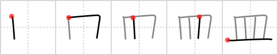

皿
← →
dish

Reading:
On-Yomi: ベイ — Kun-Yomi: さら
Heisig story:
The kanji for a dish is, clearly, the pictograph of a painted or carved bowl, seen from the side.
Koohii stories:
1) [chamcham] 30-9-2006(223): Three dishes stacked side-by-side in a dishwasher.
2) [narazumono] 21-12-2008(53): Pictograph of a dish with a three-layer cake slice on it.
3) [gavmck] 7-12-2009(28): 3 dishes in a dish rack. HINT: To avoid making 4 dishes, remember that '4' is an unlucky number in Japan so things are rarely in sets of 4.
4) [dilandau23] 14-3-2007(8): The Holy Grail.
5) [nest0r] 30-1-2008(4): I eat fast, so all my dishes have racing stripes like this one.